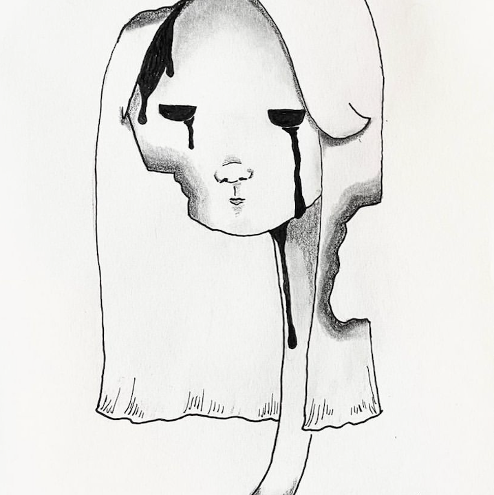
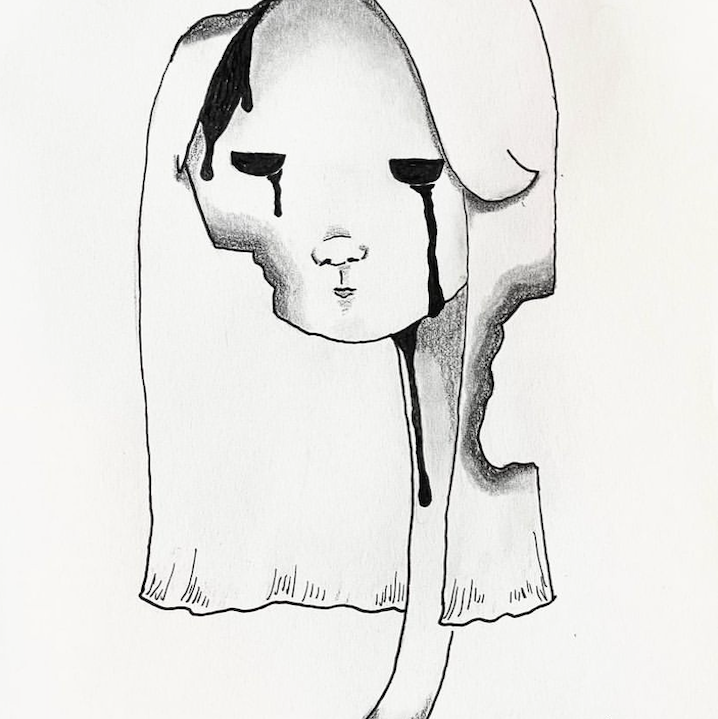

I am a third-year PhD student at Carnegie Mellon University in the School of Computer Science's Human-Computer Interaction Institute. I am advised by Professor Haiyi Zhu in the Social AI Group.
Previously, I graduated from Cornell University (BS in Computer Science '19) and worked as a software engineer at Amazon.
request my CV / email me at: annafang [at] cmu [dot] edu
I've lived in: Indiana, upstate New York, Los Angeles, Seattle, Pittsburgh I love: drawing, papermaking, ceramics (wheel-throwing), coffee, reading, indie rock & neo-psychedelic music I'm currently learning: sewing & upcycling clothes, the drums
Most importantly, I have a 10-year-old greyhound named Milo, who is a former field trial racer adopted in 2019 from GPI. Many greyhounds are rescued racers and now in need of good homes. They are famously lazy, quiet, and great for apartments. Please consider adopting a greyhound if you're looking for a dog!
My research is in computational social science. I primarily study user behavior in online social networks, and how the mechanisms and structures of these communities can enable both personal well-being (e.g. mental wellness) and community well-being (e.g. productive discourse). My work is at the intersection of network science, artificial intelligence, and social science.
Some of my work representative of my interests are:
- Measuring the Stigmatizing Effects of a Highly Publicized Event on Online Mental Health Discourse.Anna Fang, Haiyi Zhu (CHI '23)
- Agent-based Simulation of Real-Time Algorithmic Matching for Online Mental Health Communities.Yuhan Liu*, Anna Fang*, Robert Kraut, Glen Moriarty, Cris Firman, Haiyi Zhu
- Matching for Peer Support: Exploring Algorithmic Matching for Online Mental Health Communities.Anna Fang, Haiyi Zhu (CSCW '22)
- Does Bad News Spread Faster?Anna Fang, Zina Ben Miled (ICNC '17)
I was formerly a competition artist in Indiana for a decade, primarily in graphite portraits. Nowadays I mostly experiment in pop surrealism (i.e. low brow art) and portrait sketches using a variety of mediums. I also enjoy other visual & applied art, such as ceramics, jewelry-making, and papermaking. Some of my sketchbook and other art hobbies can be found at @brainfree.ze.
I actively volunteer and foster for local animal rescues in Pittsburgh. You will also see my dog Milo around CMU!
Here is info about the wonderful animal(s) in my care. (Updated: March 2023) Email me at annafang [at] cmu [dot] edu for more info about adopting!
Pasha, 2.5 years old, calico cat!
Incredibly affectionate, calm, and curious. Purrs constantly.


 
